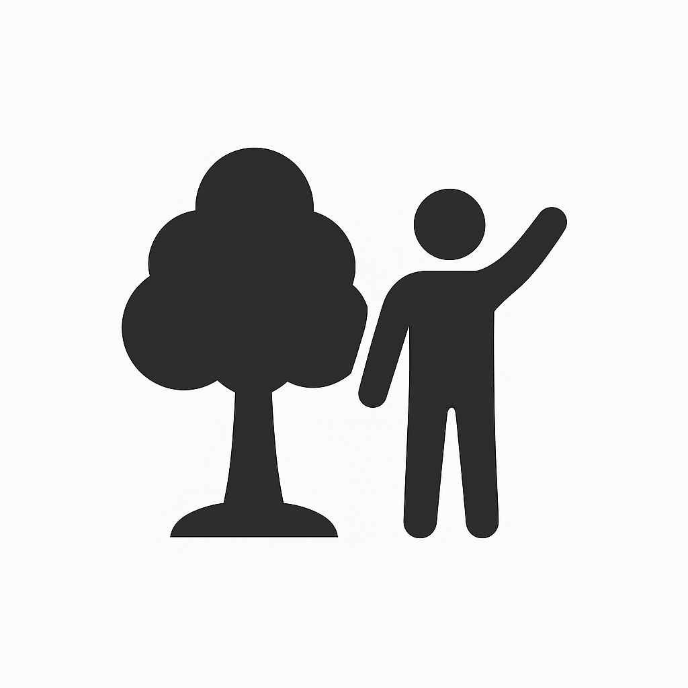

Who Am I?
I am a project manager & AWS explorer.
A tech-driven professional with a background in IT education, project management, and virtual operations. I began my career as an ICT instructor, where I developed a passion for teaching technology and simplifying complex systems.
Human at heart, architect in progress. forever learning
For the past few years, I’ve run my own business, Ita’s Virtual Solutions, offering project management, web development, and digital operations support for clients across different industries. Working remotely taught me how to balance technology with humanity, listening first, creating next, and always aiming for solutions that serve people, not just processes.
How it all started...
It started with curiosity. I’ve always been fascinated by how things connect: people, systems, and ideas. With a background in Sociology and Anthropology, I was drawn to understanding how technology shapes the way we live and work. That curiosity led me to pursue a master’s degree in Computing for Business, where I discovered how powerful technology can be when it’s designed with people in mind.
Since then, my journey has taken me through roles as an ICT instructor, virtual assistant, and project manager, each one teaching me something new about problem-solving, structure, and creativity. Over time, I found myself pulled toward the cloud, a space where innovation meets scalability. That spark led me to the AWS ecosystem, where I’m now focused on building smart, secure, and scalable solutions that bring ideas to life.
Future plans
- I continue to build on my AWS Solutions Architect – Associate certification and deepen my understanding of cloud design and infrastructure best practices.
- Alongside this, I’m working on new portfolio projects that highlight automation, cost optimization, and security within real-world AWS environments — including a serverless application and a data analytics pipeline.
- My long-term goal is to specialize in cloud architecture and DevOps. building solutions that help businesses scale intelligently while staying secure and efficient.
I believe growth never stops, so I’m committed to continuous learning — exploring advanced AWS services, containerization with Docker and Kubernetes, and infrastructure as code using Terraform and AWS CloudFormation. Each step is another opportunity to design smarter systems, improve performance, and make technology work better for people.
Hobbies and Free Time Activities
Music
Music is my therapy loud beats, shower concerts, dancing, and karaoke. It lifts my mood instantly and always brings out my fun, playful side.
Movies
I love movies that mix emotion, humor, and imagination. Romantic films, comedies, and light sci-fi are my favorites. The Sound of Music and Dear John always remind me why I enjoy meaningful, feel-good stories.
Travel
Travel inspires me. I enjoy exploring new places, cultures, and experience from quiet towns to vibrant cities. Every trip teaches me something new and fuels my sense of adventure.

Outdoor
I love simple outdoor fun: tennis, pool, bowling, or relaxing at a park. Fresh air, movement, and good company help me unwind and stay balanced.